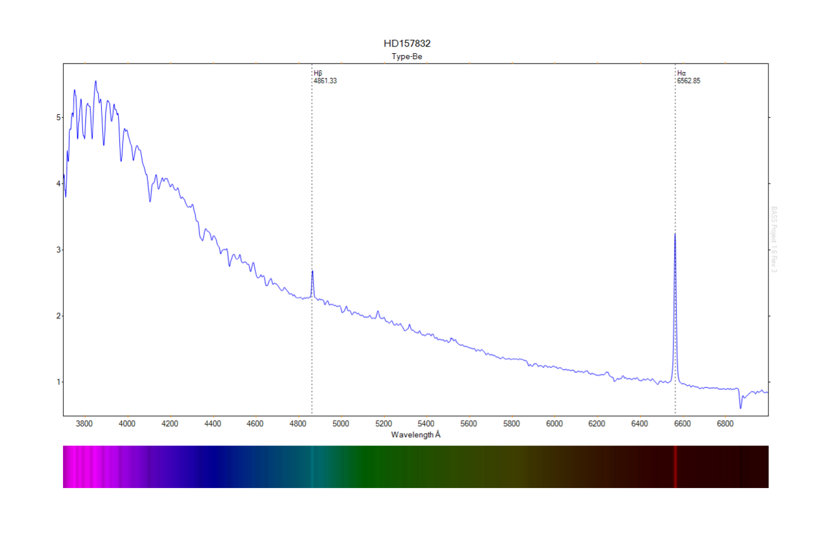
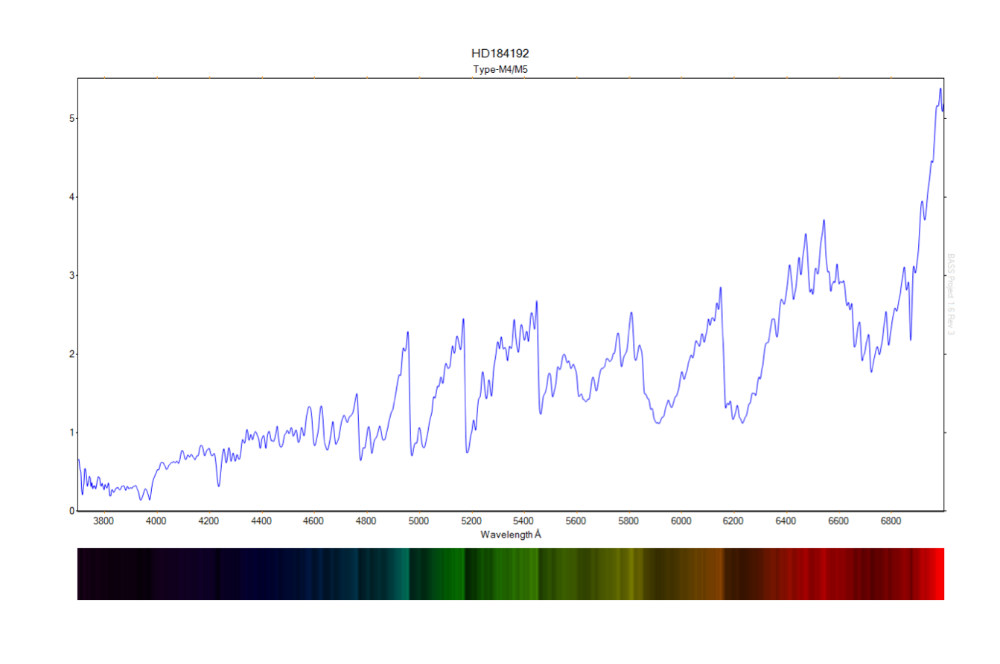
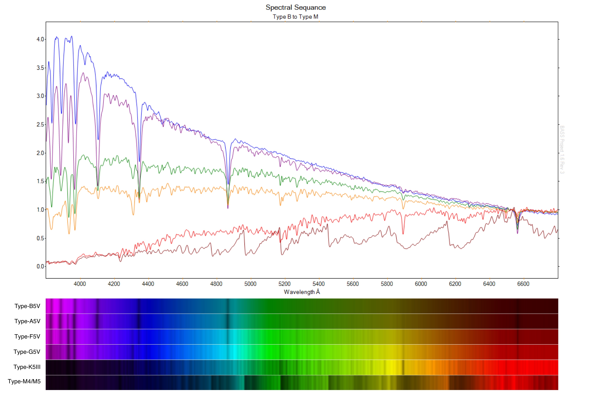
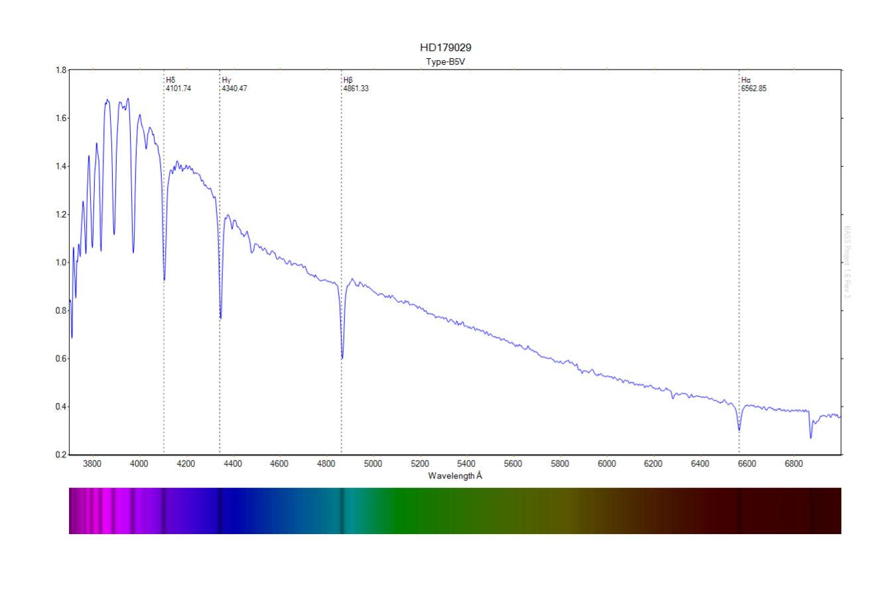
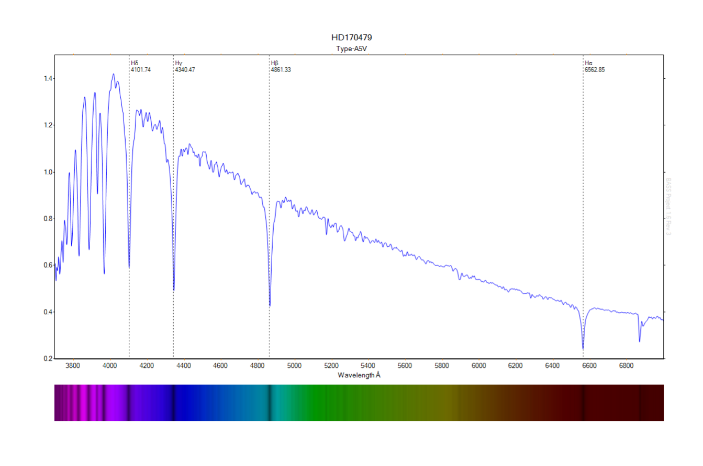
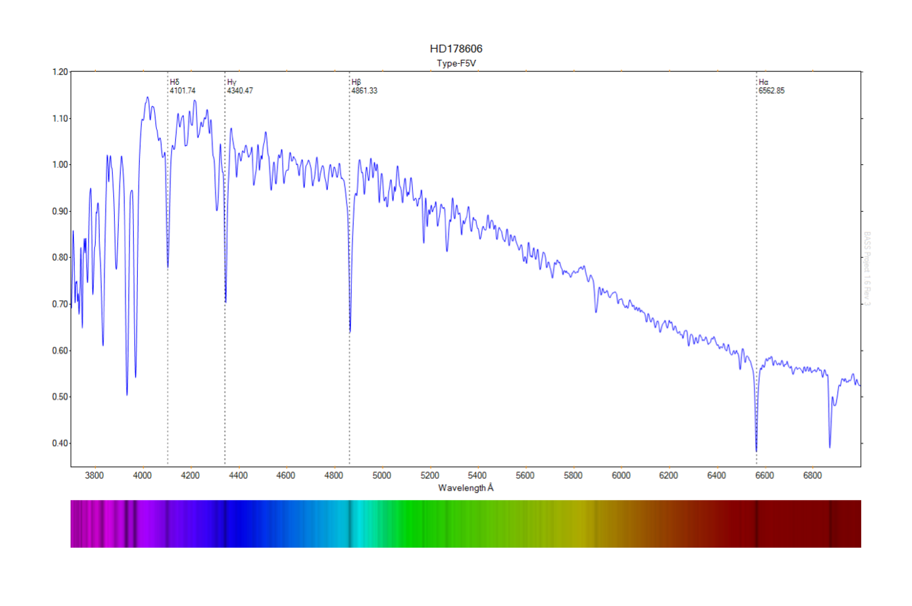
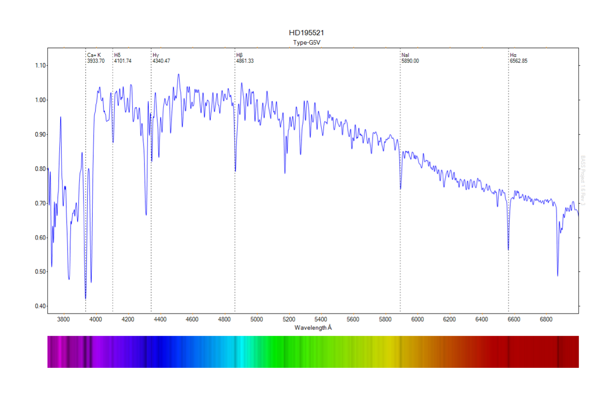
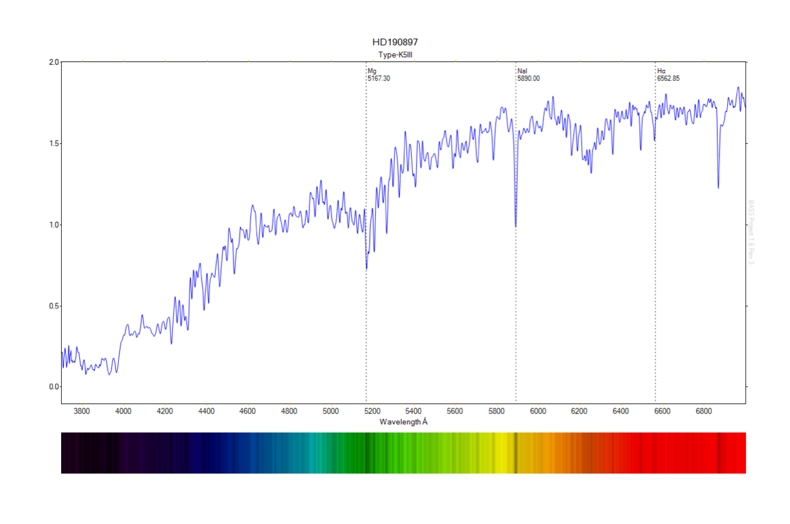
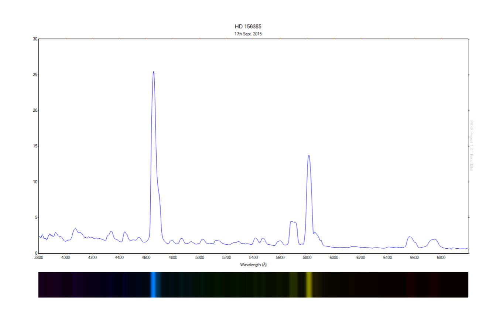

A test of the new Shelyak Alpy 600 low resolution spectrograph showing a sequence of OBAFGKM stars.


A basic Spectral sequence from Type-B to Type-M. The data was corrected and reduced using ISIS (click to enlarge). 
R = 568 @ 6402Å
Individual Profiles:
1. Type B5V

2. Type A5V

3. Type F5V

5. Type G5V

6. Type K5III

7. Type M4/M5
8. HD 157832 in the constellation of Ara showing the strong H-a emission typical of Be stars:
9. HD 156385, a Wolf-Rayet star in the constellation of Ara:
